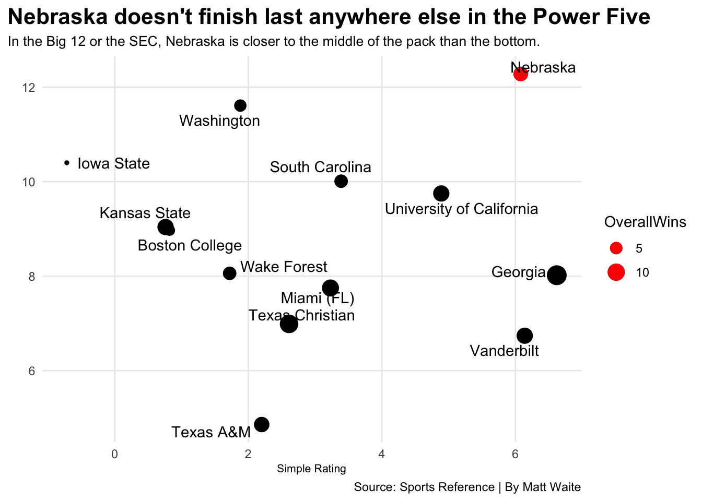

Code
library(tidyverse)
library(ggalt)
library(gt)
library(ggbeeswarm)
library(ggrepel)
stats <- read_csv("http://mattwaite.github.io/sportsdatafiles/stats21.csv")
games <- read_csv("http://mattwaite.github.io/sportsdatafiles/logs21.csv")Nebraska fans haven’t had the best time watching basketball lately. The last two seasons have featured only seven wins in each season. This season they only won three games in the Big Ten, but that was an improvement over last season when they only won two.
But anyone watching Nebraska basketball this season could see there was a difference between last season’s squad and this one. And given that the Big Ten was rated as the best conference in college basketball during the season, it begs the question: Is Nebraska that bad?
In fact, are they the best worst team in college basketball?
Let’s take a look at some numbers.
library(tidyverse)
library(ggalt)
library(gt)
library(ggbeeswarm)
library(ggrepel)
stats <- read_csv("http://mattwaite.github.io/sportsdatafiles/stats21.csv")
games <- read_csv("http://mattwaite.github.io/sportsdatafiles/logs21.csv")Sports Reference’s college basketball site produces a Simple Rating System and Strength of Schedule number for each team. The SRS is a mix of average point differential and strength of schedule. Given that, a team with a losing record could have a positive rating if they lose games close but play good teams.
Like, say, Nebraska.
stats <- games %>%
select(Team, Conference) %>%
distinct() %>%
right_join(stats, by=c("Team"="School")) %>%
filter(Games > 0)To find the worst teams, we’ll find the last place team in each conference by conference wins (minus the Ivy League, which didn’t play due to Covid).
lastplace <- stats %>%
group_by(Conference) %>%
arrange(desc(ConferenceWins)) %>%
slice(n()) %>%
filter(Games > 10) %>%
ungroup() %>%
arrange(desc(OverallSRS))
nu <- lastplace %>% filter(Team == "Nebraska")The first question we’ll ask and answer is by rating, who is the best of the last place teams? Here’s the top 10 of the bottom.
lastplace %>%
select(Team, Conference, OverallWins, OverallLosses, OverallSRS, OverallSOS) %>%
rename(W = OverallWins, L=OverallLosses, `Simple Rating` = OverallSRS, `Sched. Strength`= OverallSOS) %>%
top_n(10, wt=`Simple Rating`) %>%
gt() %>%
tab_header(
title = "The Huskers are the top of the bottom",
subtitle = "They only won 7 games but have the best simple rating and toughest schedule among the last place teams."
) %>% tab_style(
style = cell_text(color = "black", weight = "bold", align = "left"),
locations = cells_title("title")
) %>% tab_style(
style = cell_text(color = "black", align = "left"),
locations = cells_title("subtitle")
) %>%
tab_source_note(
source_note = "By Matt Waite"
) %>%
tab_source_note(
source_note = md("Source: [Sports Reference](https://www.sports-reference.com/cbb/seasons/2021-school-stats.html)")
) %>% tab_style(
style = cell_text(color = "black", weight = "bold"),
locations = cells_body(
columns = c(Team)
)
) %>%
tab_style(
style = cell_text(color = "red", weight = "bold"),
locations = cells_body(
columns = c(`Sched. Strength`),
rows = `Sched. Strength` < 0
)
) %>%
tab_style(
style = cell_text(color = "green", weight = "normal"),
locations = cells_body(
columns = c(`Sched. Strength`),
rows = `Sched. Strength` > 0
)
) %>%
tab_style(
style = cell_text(color = "red", weight = "bold"),
locations = cells_body(
columns = c(`Simple Rating`),
rows = `Simple Rating` < 0
)
) %>%
tab_style(
style = cell_text(color = "green", weight = "normal"),
locations = cells_body(
columns = c(`Simple Rating`),
rows = `Simple Rating` > 0
)
) %>%
opt_row_striping() %>%
opt_table_lines("none") %>%
tab_style(
style = cell_borders(sides = c("top", "bottom"),
color = "grey", weight = px(1)),
locations = cells_column_labels(everything())
)| The Huskers are the top of the bottom | |||||
|---|---|---|---|---|---|
| They only won 7 games but have the best simple rating and toughest schedule among the last place teams. | |||||
| Team | Conference | W | L | Simple Rating | Sched. Strength |
| Nebraska | Big Ten | 7 | 20 | 6.08 | 12.28 |
| University of California | Pac-12 | 9 | 20 | 4.89 | 9.75 |
| DePaul | Big East | 5 | 14 | 2.67 | 8.83 |
| Texas A&M | SEC | 8 | 10 | 2.20 | 4.86 |
| East Carolina | AAC | 8 | 11 | 1.00 | 3.83 |
| Boston College | ACC | 4 | 16 | 0.82 | 8.97 |
| Iowa State | Big 12 | 2 | 22 | -0.72 | 10.40 |
| Loyola (MD) | Patriot | 6 | 11 | -2.29 | -3.47 |
| Illinois State | MVC | 7 | 18 | -5.45 | 0.38 |
| North Carolina-Wilmington | CAA | 7 | 10 | -6.84 | -6.47 |
| By Matt Waite | |||||
| Source: Sports Reference | |||||
Nebraska has the best simple rating against the toughest competition of the top 10 of the bottom. Meaning they played better against tougher teams than any of these schools on here, including the Big East, the SEC and the Pac-12. The closest in competition to the Big Ten is the Big 12, and Nebraska is far better than Iowa State (which, this season, is a low bar).
But what about all teams in college basketball? Where does Nebraska rank out against other teams and other conferences?
ggplot() +
geom_vline(xintercept = 6.08) +
geom_beeswarm(
data=stats,
groupOnX=FALSE,
aes(x=OverallSRS, y=Conference), color="grey") +
geom_beeswarm(
data=lastplace,
groupOnX=TRUE,
aes(x=OverallSRS, y=Conference), color="blue") +
geom_beeswarm(
data=nu,
groupOnX=TRUE,
aes(x=OverallSRS, y=Conference), color="red") +
geom_text(
aes(x=2, y="Big Ten", label="Nebraska")
) +
labs(x="Simple Rating", y="", title="Nebraska's simple rating is better than 9 conferences", subtitle="The Husker's finished dead last in the Big Ten, but wouldn't anywhere else given their rating.", caption="Source: Sports Reference | By Matt Waite") +
theme_minimal() +
theme(
plot.title = element_text(size = 16, face = "bold"),
axis.title = element_text(size = 8),
plot.subtitle = element_text(size=10),
panel.grid.minor = element_blank(),
plot.title.position = "plot"
)
Admittedly, the nine conferences Nebraska wins aren’t exactly powerhouses. What about the Power Five?
powerfive <- c("Big Ten", "Big 12", "Pac-12", "SEC", "ACC")
betterpowerfive <- stats %>% filter(Conference %in% powerfive) %>% filter(OverallSRS <= 7.10) %>% arrange(desc(OverallSRS))By simple rating, Nebraska is better than 14 teams in the Power Five, including four SEC teams and three Big 12 teams. How much better? This bubble chart with the size of the dot scaled by number of wins shows that Nebraska is better than a lot of teams who won more games.
ggplot() +
geom_point(data=betterpowerfive, aes(x=OverallSRS, y=OverallSOS, size=OverallWins)) +
geom_point(data=nu, aes(x=OverallSRS, y=OverallSOS, size=OverallWins), color="red") +
geom_text_repel(data=betterpowerfive, aes(x=OverallSRS, y=OverallSOS, label=Team), point.padding = 4) +
labs(x="Simple Rating", y="", title="Nebraska doesn't finish last anywhere else in the Power Five", subtitle="In the Big 12 or the SEC, Nebraska is closer to the middle of the pack than the bottom.", caption="Source: Sports Reference | By Matt Waite") +
theme_minimal() +
theme(
plot.title = element_text(size = 16, face = "bold"),
axis.title = element_text(size = 8),
plot.subtitle = element_text(size=10),
panel.grid.minor = element_blank(),
plot.title.position = "plot"
)
Nebraska has the core of its team coming back and the Big Ten is not going to be as good as it was this year going forward. There’s been turmoil in some programs, turnover in others, and the NBA draft is going to take some talented players out of the conference.
Where does Nebraska finish next year? Signs point to better than last.